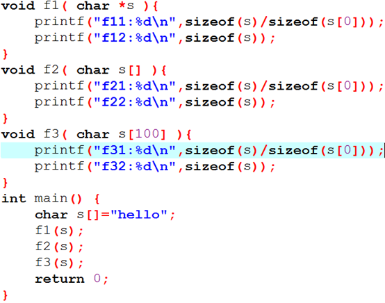
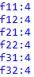
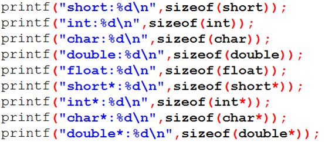
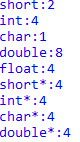

2019-07-18
一：
1. 软件模块划分：高内聚低耦合，提高模块独立性，即使用一个模块完成一项功能，耦合性越少越好。
2. 算法的性质：有穷性（有限操作步骤）；确定性（含义唯一，步骤确定）；有0个或多个输入；有一个或多个输出；有效性（步骤能有效执行）。
3. 同一文件中的所有函数都能引用全局变量的值。形式参数是局部变量。在函数外定义的变量是全局变量，在函数内定义的变量是局部变量。
二：
1. 程序的局部变量存在于栈中，全局变量存在于静态区中，动态申请数据存在于堆中。
内存中供用户使用的存储空间分为3部分：程序区；静态存储区；动态存储区。
静态存储区：全局变量（程序开始执行时给全局变量分配存储区，执行完毕后释放，占据固定的存储单元）；静态局部变量（只在编译时赋一次初值，只能被本函数引用）；静态外部变量（函数外部静态变量）；外部变量。栈区。
动态存储区：函数形式参数（调用函数时给形参分配存储空间）；自动变量，即函数中的没有用static声明的变量；函数调用时的现场保护和返回地址等。当函数调用开始时分配动态存储空间，函数结束时释放这些空间。栈区。
存储类别：自动（auto，默认，动态存储区）、静态（static，静态存储区）、寄存器（register，CPU寄存器中）、外部（extern，静态存储区）。
内存动态分配区域：随时开辟，随时释放。只能通过指针来引用。堆区。
2. 字符数组s所占空间，sizeof(s)的值。
char s[]="hello"; => sizeof(s) = 6。
3. 结构体n所占空间，sizeof(n)的值。
struct n{
char c;
int d;
short b;
}; => sizeof(struct n) = 12。
结构体长度与所占空间不同：
用sizeof可计算结构体所占空间。与字节对齐（可自定义字节对齐方式）和结构体中的成员顺序有关。结构体空间分配的默认字节对齐方式为与结构体中所包含类型中最宽的类型对齐。如上例：存储方式：1…42..=>4*3=12字节。
结构体长度直接计算各成员长度即可。
详细可参考链接：https://blog.csdn.net/qq_28249373/article/details/76784475
4. 形参为一维数组时，形参大小。
数组作函数参数：
（a）数组元素作函数实参，向形参变量传递的是数组元素的值；
（b）数组名作函数实参，向形参（数组名或指针变量）传递的是数组首元素的地址。
在形参中指定大小是没有意义的，编译时形参数组名被处理为一个指针变量用来接收一个地址，并不检查形参数组大小。




补充：sizeof(long) = 4， sizeof(long long) = 8
ð不管指针的指向类型如何，指针变量占4个字节。
详细参考链接：https://blog.csdn.net/lhj_168/article/details/80308041
指针大小是由当前CPU运行模式的寻址位数决定：Intel 32位处理器32位运行模式，逻辑寻址位数32，指针也就是32位，即4个字节；Intel 32位处理器16位虚拟机运行模式，逻辑寻址位数16，指针也就是16位，即2个字节。
5. 二维数组、一维数组与指针：
（1）二维数组与指针：
数组名代表数组首元素地址。可将二维数组认为是“数组的数组”，如：int a[3][4]：
可将a看作由3个一维数组组成的；
a代表二维数组首元素的地址，但该首元素是由4个整型元素组成的一维数组，即a代表首行的首地址，a+1则为序号为1的行的首地址即&a[1]；
a[0]为一维数组名，数组名代表数组首元素地址，所以a[0]代表一维数组a[0]中第0列的地址&a[0][0]，是地址而不是某个元素的值，占存储单元；
a[0]+1为&a[0][1]（可令a[0]=x，表示一个一维数组名），与a+1相区分，因为a表示的是二维数组首元素即由4个整型元素组成的一维数组的地址，在其基础上+1应加整个元素的长度，即下一行。
*(a+0)与a[0]等价（类比一维数组，*(a+i)与a[i]是等价的），故：a[0]+1与*(a+0)+1都是&a[0][1]，进而，*( a[0]+1 ) 和 * ( *(a+0)+1 )即 *( * a +1 )（a+0=a）都是a[0][1]的值，即*( a[i] + j )或*( *( a+i ) +j )都是a[i][j]的值。
a+1和*( a + 1)是同一个地址，后者不是a+1单元的内容，因a+1是二维数组中第一行的首地址，并不是一个变量的存储单元，无内容可言；*( a + 1 ) 是a[1]，但a[1]是一维数组名，是地址，即指向a[1][0]，即表示1行0列元素a[1][0]的地址。
注意，a+1中加的是一维数组的长度，若要得到该一维数组中的某个元素的值，即得到二维数组中的某个元素值，应首先使其加地址的长度变为一个int，而非一维数组的长度4个int，也就是要指向某一行的0列而非整行。(a+1)与* (a+1)的区别即在于此，前者等价于&a[1] （类比一维数组，令一行=一个元素，&一个元素，即为元素的地址，元素+1，则元素地址+1，对应于一行地址+1），指向行；而后者等价于a[1] ，指向该行中的0列（如前述，可令a[1]=x，表示一个一维数组名，指向x的首元素地址）,在后者基础上* ( a + 1 ) + 2则是&a[1][2]，进而可得到其值，即：*( *(a+1)+2 )。
a[0]表示包含4个整型元素的一维数组的首元素地址，即一维数组名，指向0行0列，&a[0][0]；而a为二维数组名，0行首地址，指向一维数组a[0]。指针类型不同，含义不同，加操作的结果也不同。例：排长管3个班，班长管10个战士，一班为一行，排长纵向按班（行）点名，行指针（指向数组的指针）；班长横向按战士（列）点名，列指针（指向某个元素的指针）；每个具体的战士则为二维数组的元素。
小结：
（参考书：C程序设计第四版-谭浩强-P245-248,推荐详细看这本书这段，讲的很清楚，本文如有问题，欢迎指正）
二维数组名指向行；一维数组名指向列元素。
在指向行的指针前加*可转换为指向列的指针。*(a+i)与a[i]（指向列）等价，如：*(&a[1])=a[1]（取a[1]地址，并指向该地址），a+1=&a[1]（a[1]为第一行，是一个一维数组，取该一维数组（行）的地址） => *(a+1)=a[1]。
在指向列的指针前加&可转换为指向行的指针。a[1]为一维数组名（1行），指向a[1][0]，1行0列首地址；&a[1]为取a[1]（一维数组名，1行）的地址，故指向变为行首地址。
（2）一维数组与指针：
例：
int a[5]={1,2,3,4,5};
int *ptr = (int *)(&a+1);
printf(“%d\n”,*(ptr-1));
先看int *p=&a;在编译时会弹出警告，&a为取一维数组名a（可理解为0行）的地址，则所定义指针应指向整个一维数组（该行），也可按上述“在指向列的指针前加&可转换为指向行的指针”来解释。（当&a[0]时，仅为一个元素的地址，无所谓行列）。
因此，应这样定义：int (*p)[5] = &a;（p指向含有5个元素的一维数组），此时编译无警告，若输出p和p+1的值，发现二者相差为5个整型元素所占空间，即所加空间等于该一维数组所占空间。
&a+1与a+5的值是相同的，指向同一个地址，但含义不同（注意此处a为一维数组）：前者为1行的首地址，加操作时加的是该数组所占空间（行）；后者为在一维数组名基础上加，一维数组名指向该数组首元素地址，指向列，加1操作时加的是该数组中一个元素所占空间。但a[5]的值实际上是未知的。
实际上int *ptr = (int *)(&a+1);等价于int *ptr = *(&a+1);由上述分析，&a+1是一维数组（一行）的首地址，而ptr指向该地址，则指向该行的首地址，即指向列，也就是int型指针，而不是指向一维数组，因此该定义不会出现警告。这也与上述“在指向行的指针前加*可转换为指向列的指针”相符。
因此，(ptr-1)即( *(&a+1) -1 )，指向列的指针-1即为指针后退一个数组元素所占空间，故为指向a[5]，所以*(ptr-1)值为a[5]=5。
参考链接：https://blog.csdn.net/wangkaiblog/article/details/7724790
2019-07-19
1、关于转义字符：\八进制数字，\x十六进制数字，输出该八进制码对应的ASCII字符。
如：printf( "\101\x41" );输出结果：AA。'A'的ASCII值是65，对应八进制101，十六进制41。
在定义变量时，如：int a = 0101;（八进制数0开头）或int a = 0x41;（十六进制数0x开头），按%d形式输出结果为65，%c形式输出结果为A。
2、条件运算符：表达式 ？若为真 ：若为假。
3、指定输出数据长度%列数d，如：int a = 5678;按%2d输出为5678；按%5d输出为 5678，输出数据共占5列，5678前有一个空格。即这种方式输出不会损失整数部分的数据。
如：float b = 56.55;按%2.4f输出为56.5500；按%6.1f输出为 56.5，输出数据占6列，小数部分按（>5进，<=5舍）处理。
4、C语言中，函数间可以互相调用，但不能调用main函数，main函数是被操作系统调用的。
5、C源程序编译和运行过程：编译（预编译和正式编译，生成二进制目标程序.obj）-> 连接（生成可执行程序.exe） -> 运行。其中预编译阶段处理预处理命令行，将需要包含的头文件内容读入取代#include <xx>行，再进行正式编译，检查语法错组。这些由集成环境（IDE）完成。
6、一个常见的字符串使用错误：char a; char *str = a; strcpy(str,"hello");这段程序的错误在于：没有给str分批内存空间，将会发生异常。
7、求数组table的元素个数：sizeof(table)/sizeof(table[0])
8、指针数组与指向函数数组的指针：
int *p[4]; //一个指针数组，每个数组元素都可指向一个整型变量。[]优先级高于*，因此先为数组，后才为指针，故为指针数组。
int (*p[10])(int) //一个指向函数的指针数组，每个数组元素都可指向函数类型为整型且只有一个整型参数的函数。
9、关于常量指针与指向常量的指针：详细参考链接：https://www.cnblogs.com/bencai/p/8888760.html
如：char * const p = &c; //p为常量指针，p的值不可以修改，如再有：p=&d;则该语句是不合法的，即编译不通过。若定义时去掉const，则没有问题。
const char * p = "acs" 与 char const * p = "acs"含义相同，p是指向常量的指针，所指向的常量值不能修改，但p可以重新赋值。如：p[0]='b'是不合法的，但：p = &c;是合法的。
如：char * p = "acs"; //该指针p的定义存在问题（虽然编译可通过），由于p指向了常量，因此应定义为 const char * 类型；若再有p[0] = 'a';语句则运行时会出现异常，导致该程序停止工作。所以，在定义时就应该定义为指向常量的指针，防止后续对所指向常量的非法更改带来的运行错误，如：若将p定义为const char * 类型，则在编译时就会对p[0] = 'a';语句报错。